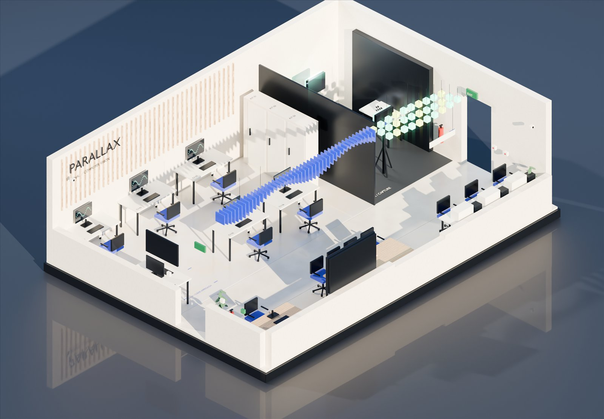
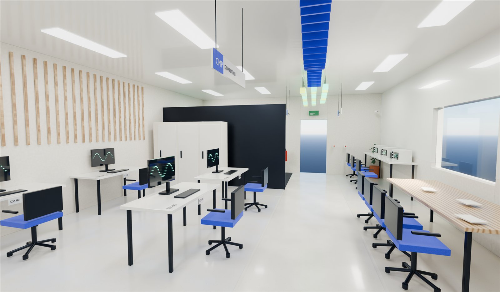
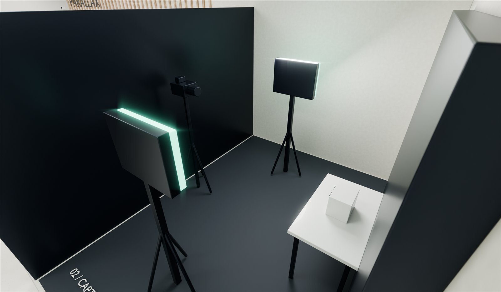
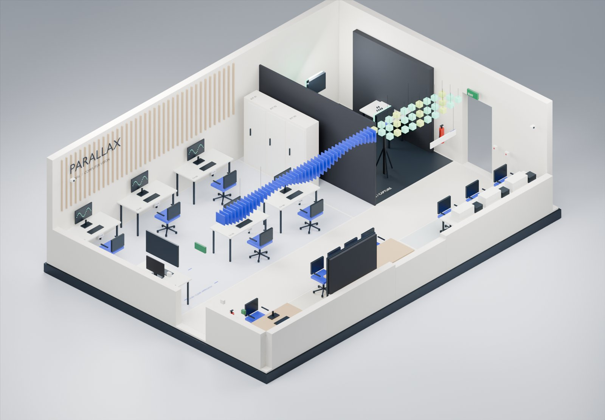
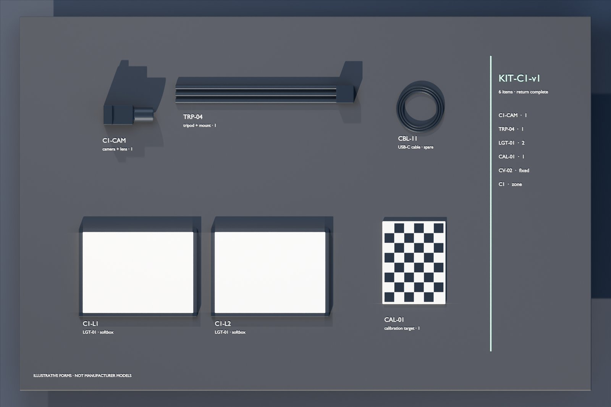

Part 08 · 3D and interaction · P8-B
The room you can study before you enter it.
One model, three uses: images that explain the room, a map that finds what you booked, and a studio that teaches what a camera can and cannot see.

Film A01A slow orbit of the cutaway. Silent; it does not play if you have asked for reduced motion.
- 11stills from one shot list: H01 and R01–R10
- 433D nodes named by the same IDs as the booking data
- 69ktriangles, against a budget of 150k
- 3.3MBinteractive model, against a budget of 5 MB
A03 · Signal → pixel · live
Sampling, made visible.
The sculpture turns a smooth waveform into blocks. Drag the rate below 4 Hz and the samples start telling a story the signal never told.
Generated 2 Hz reference — not a measurement. Connects to experiment E01.
Working prototypes
Find it. Then learn to see it.
Both run in the browser from the same room model and identifiers. Neither requires 3D to finish a task.

P10 · Lab Map
Find your place in the lab.
- Plan first; 3D with soft shadows, ID pins and availability halos on request
- Availability and occupancy as separate facts, with freshness and a stale state
- Failure and no-WebGL states keep the plan and your selection

P13 · Scene Studio · E12
Explore the camera’s viewpoint.
- Softbox-lit simulated image beside the scene and a measured interpretation
- Visibility from an object-ID render; cause-and-effect explanations
- Presets include an occlusion case and an impossible position, explained
The shot list · G17 · Cycles
Images that expose the design, not hide it.
Every surface is procedural; every object comes from the same geometry as the plan. Select an image to view it full screen.
P8-A → P8-B · same geometry, new light
Drag to compare.
Nothing moved. Materials, sky, sun, lens and post changed. The earlier study is kept as the record.

P8-AP8-BFig. R02Use the pointer, or focus the image and press the arrow keys.Open the P8-A record

R09 · KIT-C1-v1 · G17.09
Everything you borrow has a name.
The return check in Phase 6 and the technician’s passport in Phase 7 read the same IDs printed on these parts.
- C1-CAMCamera + lens · restricted in the RST-0417 story
- TRP-04Tripod + mount
- LGT-01 ×2Softboxes C1-L1 and C1-L2
- CAL-01Calibration target · FU-2041 follow-up
- CBL-11Spare USB-C cable from MNT-0417-01
Illustrative forms, not manufacturer models.
3D interaction contract · G15 / G16
Optional, accessible, honest.
Eight rules from the blueprint, and what the prototypes do about each one.
| Rule | How P8-B meets it |
|---|---|
G16.01–02A readable default and named views | Overview plus Capture, Signal bench, Workstations, Demonstration; eased camera moves. |
G16.03Details live in HTML | Facts live in the drawer; 3D pins are real buttons that open it. |
G16.04 · 07 · 12List, search, nothing hidden | Searchable list and focusable plan; pins declutter instead of disappearing. |
G16.05 · 10Reset, and following can be turned off | Reset view; follow toggle; halos and pins can be hidden; reduced motion removes pulse and easing. |
G16.08–09Availability is not occupancy | Two labelled facts; halos use shape and colour; reviewable stale state. |
G16.13–15Detect, ask first, stay optional | Plan by default; WebGL2 detection; model loads on request; failures return to the plan. |
WCAG 2.2.2Pause, stop, hide | The film has a pause control and does not autoplay under reduced motion; A03 has its own pause. |
G15.15Not a live twin | States come from data/resources.json and are labelled example state. |
Prepared study / Renders: spatial/blender/render_phase8b.py (P8-B look) on P4-D geometry; P8-A outputs retained. Equipment forms illustrative; Scene Studio and A03 are simulations. Participant and device testing belong to Phase 9.